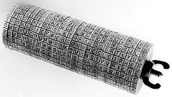
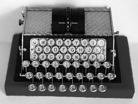
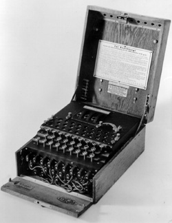
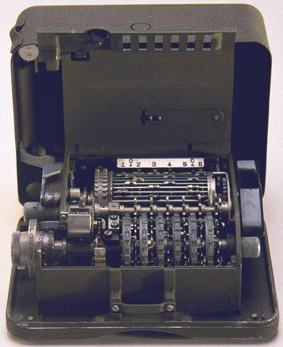

Najstariju takvu praktiènu napravu, Jeffersonov kotaè za šifriranje, izumio je amerièki državnik Thomas Jefferson krajem 18. stoljeæa. Naprava je bila toliko ispred svog vremena, da ju je amerièka vojska poèela koristiti tek 1922. godine.
Jeffersonov kotaè se sastoji od drvenog cilindra s rupom u sredini kroz koju je provuèena željezna os. Cilindar je presjeèen na 26 manjih cilindara (diskova) jednakih širina. Ovi diskovi se mogu neovisno jedan od drugoga okretati oko zajednièke osi. Na vanjštini svakog diska nalazi se 26 jednakih kvadratiæa. Tih 26 kvadratiæa se na proizvoljan naèin popunjava s 26 slova engleskog alfabeta, razlièito od diska do diska.

Pošiljalac i primalac imaju dva identièna kotaèa. Da bi šifrirao otvoreni tekst, pošiljalac podijeli tekst na blokove od po 26 slova. Blok se šifrira tako da se rotiranjem diskova u jednom od 26 redaka dobije otvoreni tekst. Tada za šifrat možemo izabrati bilo koji od preostalih 25 redaka. Npr. koristeæi kotaè sa slike, otvoreni tekstTHOMASJEFFERSONWHEELCHIPER
bi se mogao šifrirati kaoVSJGHLZHWPOMEUBVSLZWQVRPIT.
Primalac dešifrira šifrat tako da rotiranjem diskova u jednom retku dobije šifrat. Sada meðu preostalih 25 redaka potraži onaj koji sadrži neki smisleni tekst i taj redak predstavlja otvoreni tekst.Osnovna ideja Jeffersonovog kotaèa jest kreiranje polialfabetskog kriptosustava korištenjem diskova koji se rotiraju više ili manje neovisno. Ova ideja je bila osnovna i kod mehanièkih i elektromehanièkih naprava koje su izmišljene kasnije. Tako dobiveni kriptosustavi se mogu shvatiti kao šifre Vigenèreovog tipa s kljuènom rijeèi ogromne duljine (obièno više od 1010). Stoga su kod njih napadi Kasiskijevom metodom i metodom indeksa koincidencije praktièki neprimjenjivi.
Spomenimo najznaèajnije takve naprave i njihove izumitelje.
Amerikanac Edward Hugh Hebern izumio je 1915.
godine ureðaj koji je nazvao
elektrièni stroj za kodiranje.

To je bio elektrièni ureðaj kojim su se dva elektrièna pisaèa stoja spajala pomoæu 26 žica, ali s razbacanim rasporedom, pa kad bi se udarila tipka na pisaæem stroju za otvoreni tekst, drugi bi stroj automatski otipkao šifarski ekvivalent tog slova. Dvije godine kasnije, u ureðaj je ugradio 5 tzv. "rotora". Rotori su na svakoj strani imali po 26 elektriènih kontakata. Svaki kontakt na jednoj strani nasumce je spojen žicom s nekim kontaktom na drugoj strani. To zapravo predstavlja jednu monoalfabetsku supstituciju. No, rotiranjem rotora i to tako da najprije prvi napravi cijeli krug, pa se zatim drugi pomakne za jedno mjesto, itd., dobivamo polialfabetsku supstituciju s periodom 265 ≈ 107.
Njemaèki pronalazaè Artur Scherbius je 1918.
godine izumio rotorsku napravu koju je nazvao
ENIGMA. Razlikovala
se od drugih rotorskih naprava po tome što su pomacima rotora
upravljali zupèanici, pa se moglo postiæi da ti pomaci imaju
nepravilan slijed.

Do masovne uporabe ENIGME došlo je neposredno prije i za vrijeme Drugog svjetskog rata. Razbijanje njezine šifre (kombinacijom kriptoanalize i klasiène špijunaže) imalo je važnu ulogu za tijek i ishod drugog svjetskog rata. Postojale su razlièite (vojne i komercijalne) inaèice ENIGME. Posebno je bila poznata japanska inaèica ENIGME, koju su Amerikanci nazivali PURPLE.ENIGMA je bila elektromehanièka naprava koja se sastojala od tipkovnice s 26 tipki poput pisaæeg stroja, zaslona s 26 žaruljica za prikaz šifriranog izlaza, tri mehanièka rotora (šifrarnika) i elektriène prespojne ploèe. Pritiskom na tipku kroz mrežu kontakata rotora i prespojne ploèe zatvorio bi se strujni krug i upalila bi se odgovarajuæa žaruljica koja oznaèava šifrirano slovo. Mehanièki rotori sastojali su se od diskova s 26 kontakata. Svaki kontakt na jednoj strani diska bio je povezan s nekim drugim kontaktom na suprotnoj strani. Veæina modela ENIGME sastojala se od tri rotora koji su smješteni u ležište tako da se kontakti susjednih stranica meðusobno dodiruju, tj. "izlaz" jednog rotora predstavljao je "ulaz" drugog. Izlaz treæeg (zadnjeg) rotora bio je povezan na reflektor - statièan mehanièki disk slièan rotoru, s meðusobno prespojenim elektriènim kontaktima samo na jednoj strani. Njegova je zadaæa bila da elektrièni signal šalje natrag kroz rotore, no drugim putem. Prvi se rotor nakon svakog šifriranog slova okretao za jedan kontakt, a kad bi uèinio potpun krug, mehanièka je poluga okretala sljedeæi rotor za jedan kontakt.
Tri ožièena rotora s 26 kontakata daju 263 = 17 576 moguæih kombinacija. To nije dovoljno velik broj da bi dao zadovoljavajuæu sigurnost. Scherbius je poveæao sigurnost ENIGME poveæavajuæi broj moguæih poèetnih postavki na dva razlièita naèina: izmjenjivim rotorima i prespojnom ploèom. Buduæi da su rotori mehanièki gotovo identièni, a njihovi elektrièni spojni putevi razlièiti, njihovom meðusobnom zamjenom mijenja se i naèin šifriranja samog stroja. Broj moguæih permutacija triju rotora je 6. Znatno veæi doprinos sigurnosti donosi prespojna ploèa, koja korisniku omoguæuje da doda kablove, koji imaju efekt zamjene nekih slova prije ulaska u prvi rotor. Na primjer, kabel se može koristiti za zamjenu slova A i D, tako da kad korisnik pritisne tipku A, elektrièni signal zapravo slijedi put kroz rotore koji bi bez prespojne ploèe bio put slova D, i obrnuto. Od 1939. godine standardizirano je korištenje 10 prespojnih kabela, što je davalo 150 738 274 937 250 moguæih kombinacija. te je napad ispitivanjem svih moguæih kombinacija postao nemoguæ.
Pa ipak, dvije grupe matematièara-kriptoanalitièara uspjele su pronaæi naèin za dekriptiranje ENIGME. Bile su to poljska grupa, koju je predvodio Marian Rejewski, te britanska grupa, koju je predvodio Alan Turing.
Prvi napredak u kriptoanalizi ENIGME ostvaren je 1931. godine akcijom francuske obavještajne službe, koja je stupila u vezu s bratom naèelnika sektora veze njemaèke vojske, Hansom-Thilom Schmidtom, koji je uz naknadu od 10 000 tadašnjih njemaèkih maraka Francuzima dostavio upute za uporabu ENIGME. Buduæi da su Francuzi i Poljaci po završetku Prvog svjetskog rata potpisali ugovor o vojnoj suradnji, ti su dokumenti dostavljeni poljskom uredu za kriptografiju Biuro Szyfróv. Dokumenti su opisivali i proceduru mjeseène distribucije knjiga s kljuèevima koje sadrže postavke ureðaja potrebne za šifriranje ili dešifriranje poruke. Svaki mjesec, operateri ENIGME bi dobili novu knjigu s kljuèevima koja je specificirala koji kljuè se rabi koji dan. Što se tièe orijentacije rotora, svaki rotor je imao alfabet ugraviran na vanjskom omotaèu, pa bi operater rotirao rotor sve dok se na vrhu ne bi pojavila slova specificirana u dnevnom kljuèu. Svaki dan vrijedila je druga šifra, no, buduæi da su se dnevno šifrirale ogromne kolièine poruka, bilo je potrebno nekako postiæi da se sve te poruke ne šifriraju doslovno istim kljuèem, jer bi to znatno smanjilo sigurnost. Stoga su Nijemci uveli distribuciju "kljuèa za poruku" pomoæu dnevnog kljuèa. Kljuè za poruku je imao iste postavke na prespojnoj ploèi i isti raspored rotora kao dnevni kljuè, ali razlièitu orijentaciju rotora. Buduæi da ta orijentacija rotora nije bila u knjizi s kljuèevima, trebalo ju je sigurno poslati zajedno s porukom. To se radilo na sljedeæi naèin. Pošiljalac bi postavljao svoj stroj prema dogovorenom dnevnom kljuèu, koji ima orijentaciju šifrarnika npr. CXL. Zatim bi nasumièno odabirao novu orijentaciju rotora za kljuè za poruke, npr. YAQ i šifrirao YAQ pomoæu dnevnog kljuèa (i to dvaput, da bi primatelj bio siguran da je primio dobar kljuè za poruke). Na primjer, pošiljalac je mogao YAQYAQ šifrirati kao MIVWJE. Primijetimo da su dva niza slova YAQ šifrirana razlièito (prvi kao MIV, a drugi kao WJE) jer se rotori ENIGME rotiraju nakon šifriranja svakog slova. Pošiljalac tada mijenja orijentaciju rotora u YAQ i šifrira ostatak poruke prema ovom kljuèu za poruke. Kod primatelja je stroj na poèetku bio postavljen prema dnevnoj orijentaciji CXL. Nakon što se unese prvih 6 slova dobivenog šifrata, MIVWJE, dobiva se YAQYAQ. Primatelj sada zna da treba podesiti orijentaciju šifrarnika na YAQ, koji je kljuè za poruke, i onda dešifrirati preostali šifrat da bi dobio originalnu poruku.
Poljski su kriptoanalitièari predvoðeni Rejewskim iskoristili ovo ponavljanje za kriptoanalitièki napad. Znajuæi da prvo i èetvrto slovo u šifratu odgovaraju istom slovu kljuèa za poruke, oni su istraživali veze meðu tim slovima unutar svih poruka dobivenih pomoæu istog dnevnog kljuèa. Imajuæi na raspolaganju velik broj poruka, mogli su za svako slovo alfabeta naæi s njim na ovaj naèin povezano slovo. Tako bi dobili jednu permutaciju alfabeta A, B, ... , Z. Važno svojstvo permutacija je da se one mogu rastaviti na produkt ciklusa (lanaca). Rejewski je uoèio da broj elemenata u ciklusima ovisi iskljuèivo o rotorima, a ne o prespojnoj ploèi. Ukupan broj postavki rotora je 105456, što je velik broj, ali ne i ogroman. Zahvaljuæi Schmidtovoj špijunaži, Poljaci su bili u stanju napraviti repliku ENIGME, te katalogizirati koje postavke rotora daju kakve rastave na produkte ciklusa (za to im je trebala godina dana). Nakon toga, dešifriranje je bilo dosta lako. Trebalo je još odrediti veze na prespojnoj ploèi. Ako se krene u dešifriranje s prespojnom ploèom bez ikakvih veza, dobit æe se uglavnom nerazumljiv tekst. No, vjerojatno æe se naiæi i na djelove teksta koji su "skoro èitljivi", tj. u kojima je dosta jasno koja slova treba zamijeniti da bi se dobio otvoreni tekst. I tako se otkrivaju slova koja su povezana kablovima na prespojnoj ploèi. Na ovaj su naèin Poljaci nekoliko godina uspijevali redovito dešifrirati njemaèke poruke, sve dok 1939. godine Nijemci nisu znaèajno poveæali broj moguæih kljuèeva, uvoðenjem veæeg broja rotora.
Neposredno prije poèetka Drugog svjetskog rata, sva je dokumetacija rada Rejewskog poslana Britancima. Oni su u to vrijeme bili oformili veliku grupu kriptoanalitièara razlièitih profila u Bletchley Parku. Kako je ova grupa bila veæa, a imala je i znatno veæi proraèun od poljskog Biuroa Szyfróv, uspjeli su konstruirati vrlo snažne strojeve (tzv. bombe) pomoæu kojih su pokušavali dekriptirati poruke šifrirane ENIGMOM. Nakon što su svladali tehniku koju su koristili Poljaci, grupa iz Bletchley Parka, predvoðena Alanom Turingom, izmislila je još neke nove tehnike. Jedna od slabosti, ne same ENIGME, veæ njezina korištenja u praksi, bilo je korištenje "predvidljiivih kljuèeva" (tzv. cilija). Tako su operateri èesto za kljuè za poruku koristili tri susjedna slova na tipkovnici. Pored toga, Turing je pronašao efikasan naèin za dešifriranje ENIGME korištenjem metode vjerojatne rijeèi. Sve aktivnosti unutar Bletchley Parka su bile prekrivene velom tajnosti punih 30 godina. Tek je 1974. godine britanska vlada dozvolila objavljivanje prvih informacija vezanih uz britansko razbijanje ENIGME.
Šveðanin ruskog podrijekla Boris Hagelin
tvorac je niza naprava za šifriranje koje su u širokoj uporabi bile
sredinom 20. stoljeæa. On je prvi èovjek koji je postao dolarski
milijunaš zahvaljujuæi kriptologiji. Vjerojatno najpoznatiji njegov
izum je stroj C-36 iz 1936. godine, koji je u amerièkoj vojsci
imao naziv M-209.

Osnovne komponente ovog stroja bile su 6 rotora s po 17, 19, 21, 23, 25 i 26 slova, te "kavez" koji je imao 27 šipki montiranih u obliku vodoravnog cilindra koji se okreæe. Opisat æemo matematièkim terminima princip rada stroja M-209.Neka je M matrica dimenzija 6 × 27 èiji su elementi 0 ili 1, takva da niti jedan stupac od M nema više od dvije jedinice. Jedna takva matrica je ova:
| M = |
|
Ako je sada v 6-dimenzionalni vektor redak s komponentama iz
{0,1}, onda je vM 27-dimenzionalni vektor redak s
komponentama iz {0,1,2}. Npr. za v = (1,0,1,1,0,0) dobivamo
vM = (0,0,1,2,0,0,0,1,1,1,1,0,0,0,2,1,1,1,0,0,0,1,1,1,1,1,2).
Broj pozitivnih komponenti od vM se zove broj bodova
od v. U našem primjeru je taj broj jednak 16. Opæenito je
to neki broj izmeðu 0 i 27.
Step figura se konstruira na sljedeæi naèin. Složimo 6 nizova brojeva iz {0,1} jedan na drugi. Nizovi imaju duljine redom 17, 19, 21, 23, 25 i 26. Evo primjera jedne step figure:
0 1 1 0 0 0 1 0 0 0 0 0 0 0 1 1 0 0 1 1 1 1 1 0 0 0 0 0 0 0 0 0 0 0 0 0 0 0 1 0 0 0 0 0 1 0 0 0 0 0 0 0 0 0 0 0 0 0 0 0 0 0 0 0 0 0 0 0 1 0 0 1 0 0 0 1 0 0 0 1 1 0 1 0 0 0 0 0 0 0 0 0 0 0 0 0 0 0 0 0 0 0 0 0 0 1 1 0 0 0 0 0 0 0 0 0 0 0 0 1 0 0 0 1 0 0 0 0 0 0 1Za razliku od matrica, ovdje nema nikakvih ogranièenja vezanih za broj jedinica. Step figura generira beskonaèan niz 6-dimenzionalnih vektora koje dobivamo iz njezinih stupaca, s time da kad se neki redak završi, on kreæe iz poèetka. Tako su prva dva vektora u našem primjeru (0,0,0,0,1,1) i (1,1,0,0,0,1), dok su 18., 19. i 20. vektor (0,0,0,0,0,0), (1,0,0,1,0,1) i (1,0,0,0,0,0).
Sada možemo opisati postupak šifriranja. Neka je xi numerièka vrijednost i-tog slova u otvorenom tekstu, te hi broj bodova i-tog vektora generiranog step figurom. Tada je šifrat yi jednak
| (*) |
U stroju M-209 rotori odgovaraju step figuri, a kavez matrici M. Tako matrica i step figura predstavljaju kljuè za šifriranje pomoæu M-209.
Uoèimo da se jednakost (*) može zapisati i kao
xi = hi - yi - 1.
to znaèi da se isti kljuè koristi za šifriranje i dešifriranje. To je razlog zašto u formuli (*) imamo oduzimanje, a ne zbrajanje. Važno je uoèiti da su duljine redaka step figure u parovima relativno prosti brojevi. To povlaèi da je period niza generiranog step figurom jednak17.19.21.23.25.26 ≈ 108.
Ipak, u nekim specijalnim sluèajevima period može biti puno kraæi. Na primjer ako u step figuri nema nula, onda je (1,1,1,1,1,1) jedini generirani vektor, pa je period jednak 1. Opæenito, period æe biti kratak ako imamo malo jedinica u matrici M ili malo nula ili malo jedinica u step figuri, pa takve kljuèeve treba izbjegavati.
Primjer 1.14: Zadan je otvoreni tekst
KRALJEVSTVO KRALJEVSTVU NE PROPISUJE ZAKONE
te matrica M i step figura kao gore. Otvoreni tekst ima duljinu 39, a numerièki ekvivalenti slova su redom10, 17, 0, 11, 9, 4, 21, 18, 19, 21, 14, 10, 17, 0, 11, 9, 4, 21, 18, 19, 21, 20, 13, 4, 15, 17, 14, 15, 8, 18, 20, 9, 4, 25, 0, 10, 14, 13, 4.Brojevi bodova vektora generiranih step figurom su redom
10, 17, 16, 9, 9, 9, 7, 0, 0, 0, 0, 12, 0, 0, 18, 7, 0, 0, 18, 7, 9, 9, 19, 14, 9, 10, 5, 10, 0, 0, 0, 7, 7, 0, 12, 0, 9, 17, 19, 9, 9, 5, 12, 0.Sada primjenom formule (*) dobivamo šifrat
ZZPXZ ELHGE LBIZG XVEZN NOFJT SQURH FXCAL WSYV
Uoèimo da su se dva pojavljivanja niza slova KRALJEVSTV u otvorenom tekstu šifrirala jednom kao ZZPXZELHGE, a grugi put kao BIZGXVEZNN.
Kao što smo veæ ranije napomenuli, kljuèna rijeè kod šifriranja
strojem M-209 i ostalim sliènim napravama je ogromna (oko
108). Stoga primjena metode Kasiskog ne dolazi u
obzir. Ipak, dekriptiranje je moguæe ukoliko kriptoanalitièar
posjeduje dva ili više šifrata dobivenih šifriranjem razlièitih
otvorenih tekstova jednakim kljuèevima za šifriranje, ili
kljuèevima koji su "bliski", tako da se kljuène rijeèi dobivene
pomoæu njih podudaraju na nekim segmentima. U tom sluèaju može se
primijeniti tzv. Kerckhoffsova metoda superpozicije.
Pomoæu nje možemo odrediti odgovarajuæi segment kljuène rijeèi, a
potom koristeæi razne tehnike u ovisnosti o kojem je stroju rijeè,
to se može iskoristiti za rekonstrukciju èitavog kljuèa.
Prikažimo ukratko Kerckhoffsovu metodu. Pretpostavimo da su otvoreni tekst x1x2... i šifrat y1y2... povezani relacijama
yi = xi + ki mod 26 ili yi = ki - xi mod 26.
Tada iz dva šifrata dobivena istim kljuèem možemo eliminirati kljuè:yi - y'i = xi - x'i mod 26 ili yi - y'i = x'i - xi mod 26.
Sada svaku hipotezu o otvorenom tekstu x1x2... možemo testirati na otvorenom tekstu x'1x'2..., te tako hipotezu prihvatiti ili odbaciti. Jasno, metoda je još efikasnija ukoliko imamo više od dva šifrata dobivena istim kljuèem.
Primjer 1.15: Pretpostavimo da su šifrati
C R U D L H G C A S X V X D U X K U I Adobiveni istim kljuèem po pravilu yi = xi + ki mod 26.
Primijenimo na njih Kerckhoffsovu metodu. Na samom poèetku mogu nam koristiti neka saznanja o vjerojatnim poèetcima poruka, a takoðer i podatci o najèešæim prvim slovima u rijeèima (u hrvatskom: S, P, N, D, I, O), drugim slovima (u hrvatskom: A, E, O, R, I, U) i slièno.
Pretpostavimo da prvi otvoreni tekst poèinje sa SA. Tada iz X - C + S = 23 - 2 +18 = 13 = N, te V - R + A = 4 = E, zakljuèujemo da drugi otvoreni tekst poèinje sa NE. Sada možemo u nekom rjeèniku pogledati koji su najèešæi nastavci rijeèi koje zapoèinju sa SA, odnosno NE. Dobivamo: za SA to su M, V, N, a za NE to su P, O, D. Pogledajmo sada što pretpostavka da je x3 = M, V ili N daje za x'3. Dobivamo: x'3 = P, Y ili Q. Ovo prilièno jasno sugerira da prvi tekst poèinje sa SAM, a drugi sa NEP. Èetvrto slovo bi trebalo biti jednako u oba otvorena teksta i tu se kao najvjerojatnija nameæu slova O i A, s time da je O ipak vjerojatnije. Dakle, imamo: SAMO i NEPO. Sada za vjerojatne nastavke prve rijeèi u rjeèniku nalazimo (abecednim redom): B, H, K, O, P, S, T, U, koji za x'5 daju redom K, Q, T, X, Y, B, C, D, dok su vjerojatni nastavci za drugu rijeè B, D, K, M, P, R, S, V. Tu još možemo koristiti najfrekventnije bigrame koji poèinju sa O, a to su: OS, OD, OV, OJ. Sve u svemu, kao najvjerojatnije nameæu se dvije moguænosti:
S A M O U S A M O S N E P O D N E P O BU prvom sluèaju, vjerojatni nastavci prve rijeèi su B, P, V, što za x'6 daje R, F, L, dok za nastavke druge rijeèi imamo M, N, O. Stoga ovu moguænost možemo barem privremeno odbaciti. U drugom sluèaju, vjerojatni nastavak prve rijeèi je T, a druge I ili J. Buduæi da x6 = T povlaèi x'6 = J, èini se vrlo vjerojatnom kombinacija
S A M O S T N E P O B JSada je veæ jasno da je druga rijeè NEPOBJEDIV, što za prvu rijeè daje SAMOSTALAN.
| Web stranica kolegija Kriptografija | Andrej Dujella - osobna stranica |